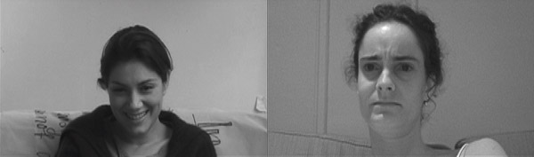

A cornerprojection with 2 videos looping in sync. Music soundtrack. Duration 4 minutes.
|  |
The installation consists of one soundtrack, and two projections playing in sync. The projections make two sides in a triangle (corner-projection), creating an illusion of actual interaction between the TV-viewers. This situates the gallery-visitor on the third axis of the triangle, contributing with his or hers expressions in response to the faces in the installation. The piece was comissioned for the exhibition “Fait à - Montréal - Made”.